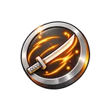
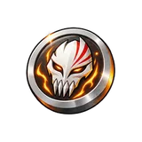
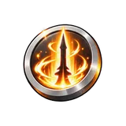

Captain Guard (gate boss) Sovereign
Beat it 5 times for the last gate mission. It never hits back. Every kill drops 3–8 Hero Tokens.
World 4
Reaper Court is World 4. Finish all gate missions in World 3 to unlock it.
| Enemy | Tier | Type | HP | Coins | XP |
|---|---|---|---|---|---|
| Lost Soul | Recruit | Enemy | 19.53qd | 50K | 30.39 |
| Hollow Grunt | Fighter | Enemy | 263.67qd | 100K | 33.43 |
| Reiatsu Adept | Veteran | Enemy | 3.55Qn | 150K | 36.77 |
| Menos Stalker | Champion | Enemy | 48.05Qn | 200K | 40.45 |
| Arrancar Shade | Overlord | Enemy | 648.73Qn | 250K | 44.5 |
| Captain Guard | Sovereign | Gate boss | 8.75sx | 300K | 48.95 |
| Espada Sentinel | Godkiller | Secret boss | 2.22O | 700K | 122.38 |
| Lord Aizon | Godkiller | Sword boss | 118.23sx | 350K | 53.84 |
Beat it 5 times for the last gate mission. It never hits back. Every kill drops 3–8 Hero Tokens.
Hidden on the map and far tougher than anything else here, with the HP of a Veteran enemy from World 6. You don't need it to unlock the next world. It has a 1% chance per kill to drop the Fire King aura (+25% drop). Every kill also drops 3–8 Hero Tokens and 32 Forge Core.
This boss fights back: a circle warns you 1.2 seconds before each hit, and it strikes every 3.6 seconds. Step out of the circle to dodge. It is not part of the gate missions. It drops swords: Reaper Blade (35%), Spirit Katana (10%), Bankai Edge (2.5%). Every kill also drops 3–8 Hero Tokens and 8 Forge Core, with a 40% chance of rune fragments.
| Enemy | Tier | Kills needed |
|---|---|---|
| Lost Soul | Recruit | 25 |
| Hollow Grunt | Fighter | 20 |
| Reiatsu Adept | Veteran | 15 |
| Menos Stalker | Champion | 10 |
| Arrancar Shade | Overlord | 8 |
| Captain Guard | Sovereign | 5 |
Finish all 6 missions, in any order. Reward: +9% energy, +4% damage.
| Name | Kind | Boosts | Paid with | Token dropped by |
|---|---|---|---|---|
| Zanpakuto | Token gacha | Energy |  Zanpakuto Token | Recruit Fighter |
| Hollow Mask | Token gacha | Damage |  Hollow Mask Token | Veteran Champion |
| Bankai | Upgrade (410 levels, up to ×5.1 damage) | Damage |  Bankai Token | Overlord Sovereign Godkiller |
 Kame Foothills
Kame Foothills Leaf Outskirts
Leaf Outskirts Grand Shore
Grand Shore